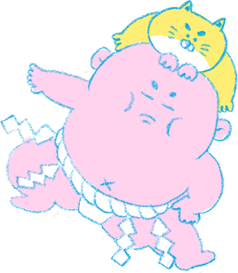
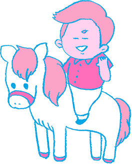

HA・RI・TE イッパツ


私立「セント・ドスコイ高校」に通う彦六＆
飼い猫のにゃん。
毎日イジメラレて帰ってくる彦六を、
何とかしたいと思ったにゃんが頭に飛び乗り、
力士に大変身。現在相撲部で、高校生力士として
「心技体」を鍛える日々を送っている。

助六の同級生。父は貿易商を営むお嬢様。
幼少時代をフランスで過ごしたため、
「ボンジュール」「オルボワール」など、
挨拶レベルの会話はついついフランス語対応してしまう。
フランス映画を愛し、休日は自宅のプロジェクターでトリュフォーの映画を楽しんでいる。

桃美の愛猫。特殊な訓練を受け、２足歩行が可能となった希少種。
カリカリフードは口にせず、三崎のマグロばかり食べている。（トロよりも赤身を好む）
「にゃん」が、密かに好意を寄せている猫でもある。
助六の同級生。「強さ＝筋力＝モテル」と
勘違いして、日夜筋トレに励んでいるマッチョな
高校生。
関東・ボディビル選手権ジュニアの部で第５位。
ポッチャリの助六をバカにしている。
助六の同級生。タイのロイヤルファミリーの末裔。
語学留学のため、日本の高校に来日。
月々の仕送りは３００万円。
移動手段のポニーを３頭、所有している。
桃美に好意を抱いており、頻繁にタイカレーディナーに誘うも断られている。

助六のクラスの担任。ファストフード大好きの英語教師。
ハワイ生まれだが、相撲留学で来日。
横綱の夢は挫折したものの現在、高校で英語を教える傍ら、相撲部の顧問として指導にあたっている。